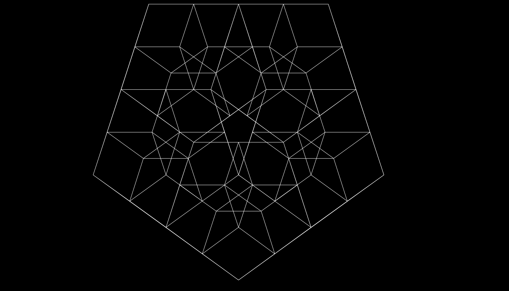

This is a simple, customisable fractals using some abstractions, for loops, and recursions, running in Python3 language. In order to run this program, make sure you have Python3's IDLE installed.
Run fractals.py or one_fractal.py with Python3's IDLE, then input the length of polygon that you want, the sides of polygon that you wish to create, and the smallest length (minimum) that the polygon can be.
Differences: one_fractal.py is used to output only 1 fractal, while fractals.py used to give 4 fractals.
Since screen size varies, therefore you may wish to adjust the position of the turtle pointers. open the fractals.py and the adjustment can be made on function move_pens().
Recommendations: